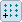
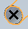

Hole Pattern Recognition dialog box
The Hole Pattern Recognition dialog contains a row for each hole pattern recognized.
- Recognize
-
Each row of a recognized hole pattern contains a check box. If selected, the recognized pattern feature is processed for conversion to a pattern feature. If cleared, the recognized pattern is ignored and the pattern turns red in the model window.
- Feature Name
-
Each detected pattern feature is assigned a system name. You can change the pattern feature name by clicking the name field and then typing a user-defined name.
- Define Master Occurrence
-
Each detected pattern feature assigns a hole as the master occurrence. Click the master occurrence icon

and an X is placed on the master occurrence hole. Select another hole in the pattern to make it the master occurrence.
- Type
-
Each detected pattern is assigned a type of either circular or rectangular. If the pattern is ambiguous, the Type field presents a list so you can choose the type.
- Recognize Patterns of Hole Patterns
-
Option to detect patterns of hole patterns. If the option is unchecked, only hole patterns are detected. If the option is checked, patterns of hole patterns are detected, but you can uncheck these and only recognize the hole patterns within the pattern of hole patterns.
How do I
Replace circular cutouts with hole featuresRecognize a hole pattern
Recognize a pattern
Learn more
Feature recognitionRecognizing holes
Hole pattern recognition
Look up more details
Recognize Holes commandRecognize Holes dialog box
Recognize Hole Patterns command
Chamfer Recognition command
Recognize Patterns command